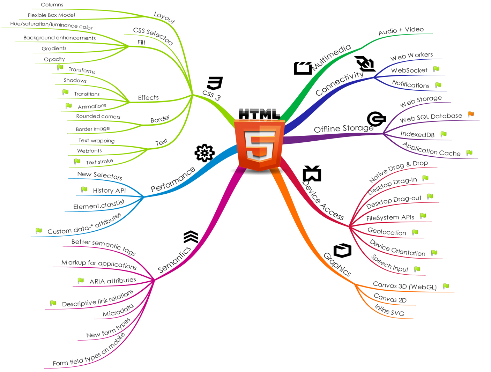

front-end
languages, frameworks and tools
HTML 5
Dernière révision majeur d'HTML.
Contient de nouveaux éléments :
<main><section><article><header><footer><aside><nav>- …
Et de nouveaux attributs pour des balises existantes.
Pour l'exhaustivité, voir Wikipédia HTML 5
Autant de ramdam pour quelques balises ?
HTML 5 est un mot valise
Préprocesseur CSS
Présentation de Sass
Outil permettant de transformer un langage, en CSS valide.
Pourquoi ?
Parce que CSS peut être chiant parfois
Problème
Styles liés à un élément
#user {
display: block;
}
#user p{
text-align: center;
}
#user img{
max-width: 250px;
}
#user .friend-list{
border: solid black 1px;
}
Solution
Imbrication
#user {
display: block;
p{
text-align: center;
}
img{
max-width: 250px;
}
.friend-list{
border: solid black 1px;
}
}
Problème
Duplication de code
#tweet {
border-bottom: solid #3b88c3 2px;
}
a {
color: #3b88c3;
}
button[type=submit] {
background-color: #3b88c3;
}
Solution
Variables
$color-blue: #3b88c3;
#tweet {
border-bottom: solid $color-blue 2px;
}
a {
color: $color-blue;
}
button[type=submit] {
background-color: $color-blue;
}
Problème
Calculs à la main
#post {
width: 70px; /* 100px - (15px*2) */
padding: 15px;
}
.list li {
color: white;
background-color: #000;
}
.list li:nth-child(even) {
background-color: #1a1a1a; /* noir "moins foncé" pour les LI pairs */
}
Solution
Calculs
$color-black: #000;
$width: 100px;
$padding: 15px;
#post {
width: $width - ($padding * 2);
padding: $padding;
}
.list {
li {
color: white;
background-color: $color-black;
&:nth-child(even) {
background-color: lighten($color-black, 10);
}
}
}
Problème
Logique dupliquée
$color-link: #00f;
$color-btn: #0f0;
a{
color: $color-link;
&:hover{
color:lighten($color-link, 10);
}
}
.btn{
color: $color-btn;
&:hover{
color:lighten($color-btn, 10);
}
}
Solution
Mixins
$color-link: #00f;
$color-btn: #0f0;
@mixin hover-element($color){
&{
color: $color;
}
&:hover{
color:lighten($color, 10);
}
}
a{
@include hover-element($color-link);
}
.btn{
@include hover-element($color-btn);
}
Problème
Un fichier CSS énorme
ou
Plusieurs fichiers CSS à charger
Solution
Import
@import 'style/sass/_variable.scss';
@import 'style/sass/_form.scss';
@import 'style/sass/_header.scss';
Problème
Classes CSS liés à la présentation dans le HTML …
…
…
.column-1{
width: 320px;
}
.column-2{
width: 640px;
}
#menu{ … }
#main{ … }
#ad { … }
Problème
… ou CSS difficile à maintenir
…
…
.column-1, #menu, #ad{
width: 320px;
}
.column-2, #main{
width: 640px;
}
#menu{ … }
#main{ … }
#ad { … }
Solution
Extend
…
…
.column-1{
width: 320px;
}
.column-2{
width: 640px;
}
#menu{ @extend .column-1; }
#main{ @extend .column-2; }
#ad { @extend .column-1; }
Problème
Préfixes
-webkit-border-radius:15px;
-moz-border-radius:15px;
border-radius:15px;
-webkit-box-shadow:0 0 5px black;
-moz-box-shadow:0 0 5px black;
box-shadow:0 0 5px black;
Solution
Compass
@include border-radius(15px);
@include box-shadow(0 0 5px black);
Installation Sass et Compass
Dépendance à Ruby
gem install compass
cd path/to/stylesheet
compass create myproject
compass watch
Les autres
- LESS
- Stylus
JavaScript
Functional Programming in 5 Minutes
ressources
SPA
Single Page Application
Applications écrites totalement en HTML 5, CSS 3 et JavaScript.
Pourquoi ?
Pour offrir une expérience utilisateur optimale, sans la lenteur des changements de page.
Comment ?
Backbone.js
Backbone.js gives structure to web applications by providing models with key-value binding and custom events, collections with a rich API of enumerable functions, views with declarative event handling, and connects it all to your existing API over a RESTful JSON interface.

Model
- Prévus pour encapsuler des ressources
- S'utilise en "étandant" l'objet Backbone.Model
- Les méthodes get() et set() permettent d'acceder et modifier les données
Model
var User = Backbone.Model.extend({
initialize: function(){
console.log('user created');
},
login: function(){
//login code
}
});
var user = new User({name: "Ioan Roxin", email: "iroxin@ufc.fr"});
var name = user.get('name');
model.id
Attribut spécial du modèle permettant de l'identifier de manière unique
model.idAttribute
var Book = Backbone.Model.extend({
idAttribute: "isbn"
});
var akira = new Book({ isbn: "978-2723412162", name: "Akira Tome 1" });
alert("Akira id: " + akira.id);
model.defaults
Créer un modèle avec des attributs par défaut
var Meal = Backbone.Model.extend({
defaults: {
"appetizer": "caesar salad",
"entree": "ravioli",
"dessert": "cheesecake"
}
});
alert("Dessert will be " + (new Meal).get('dessert'));
model.toJSON
Retourne un JSON des attributs du modèle
var artist = new Backbone.Model({
firstName: "Wassily",
lastName: "Kandinsky"
});
artist.set({birthday: "December 16, 1866"});
alert( artist.toJSON() );
//{
// firstName: "Wassily",
// lastName: "Kandinsky",
// birthday: "December 16, 1866"
//}
model.urlRoot
Base de l'url permettant de générer l'url finale
model.url
var Book = Backbone.Model.extend({urlRoot : '/books'});
var solaris = new Book({id: "1083-lem-solaris"});
alert(solaris.url()); // /books/1083-lem-solaris
model.fetch
- Récupérer les données de l'API
- Utilise la méthode ajax de jQuery, produit un HTTP GET
- Un événement
changeest émit si des attributs on changés
var book = new Book();
book.on("change", function(){ alert('The book has changed'); });
book.fetch({
success(model, response, options){
// the success callback of jquery
}
});
model.save
- Sauvegarde les données via l'API
- Créer le modèle via un HTTP POST s'il est nouveau
- Ou est mise à jour au travers d'un HTTP PUT
var book = new Backbone.Model({
title: "The Rough Riders",
author: "Theodore Roosevelt"
});
book.save();
book.save({author: "Teddy"});
model.destroy
- Détruit la ressource
- Envoi un HTTP DELETE sur l'API
book.destroy({
success: function(model, response, options) {
...
}
});
model.validate
- Methode à surcharger pour la validation
- Automatiquement appelée avant un save
- Peut être aussi appelée avant un set avec l'option
{validate:true}
var Chapter = Backbone.Model.extend({
validate: function(attrs, options) {
if (attrs.end < attrs.start) {
return "can't end before it starts";
}
}
});
var one = new Chapter({
title : "Chapter One: The Beginning"
});
one.on("invalid", function(model, error) {
alert(model.get("title") + " " + error);
});
one.save({
start: 15,
end: 10
});
model.parse
- Fonction appelée à chaque retour de données de l'API
- A en paramètre le retour brut de l'API
- Doit retourner les attributs seuls
//{
// statut: 'OK',
// api_client: 'mobile',
// data: {
// title: "Javascript: The Good Parts",
// author: "D Crockford"
// }
//}
var Book = Backbone.Model.extend({
parse: function(response, options) {
return response.data;
}
});
Collection
- Ensemble de models
- Bénéficie des fonctions de manipulation d'Underscore
Collection
var Book = Backbone.Model.extend();
var Library = Backbone.Collection.extend({
model: Book
});
var library = new Library([
{
title: "Javascript: The Good Parts",
author: "D Crockford"
},{
title: "High Performance JavaScript",
author: "Nicholas C Zakas"
},{
title: "JavaScript Web Applications",
author: "Alex Maccaw"
}
]);
Event
- "add" (model, collection, options) — when a model is added to a collection.
- "sort" (collection, options) — when the collection has been re-sorted.
- "change" (model, options) — when a model's attributes have changed.
- "change:[attribute]" (model, value, options) — when a specific attribute has been updated.
- "request" (model_or_collection, xhr, options) — when a model or collection has started a request to the server.
- "sync" (model_or_collection, resp, options) — when a model or collection has been successfully synced with the server.
view
- Un modèle est attaché à une vue
- Les vues sont aussi un peu des controlleurs
- Les vues écoutent les évenements de l'UI et des modèles
view
var DocumentRow = Backbone.View.extend({
tagName: "li",
className: "document-row",
events: {
"click .icon": "open",
"click .button.edit": "openEditDialog",
"click .button.delete": "destroy"
},
initialize: function() {
this.listenTo(this.model, "change", this.render);
},
render: function() { ... }
});
var doc = documents.first();
var docRowView = new DocumentRow({
model: doc,
id: "document-row-" + doc.id
});
view.el
- Une vue possède obligatoirement un
el elfait référence à l'objet Elementelpeut être inséré dans la page ou nonelest créé à partir detagName,className,idetattributes- Référence jQuery en cache :
$el
view.template
- Seulement une convention de Backbone
- Utiliser un outil de templating
- Undescore, Mustache, Handlebars, Jade, …
_.template
Compile des templates JavaScript en fonction à évaluer avec les données pour le rendu.
Utilise la notation ERB <%= … %> <% … %>
var compiled = _.template("hello: <%= name %>");
compiled({name: 'moe'});
=> "hello: moe"
var list = "<% _.each(people, function(name) { %> <%= name %> <% }); %>";
_.template(list, {people: ['moe', 'curly', 'larry']});
=> "moe curly larry "
view.render
Fonction à surcharger pour rendre la vue
var Bookmark = Backbone.View.extend({
template: _.template(...),
render: function() {
this.$el.html( this.template( this.model.toJSON() ) );
return this;
}
});
Router
var Workspace = Backbone.Router.extend({
routes: {
"help": "help", // #help
"search/:query": "search", // #search/kiwis
"search/:query/p:page": "search" // #search/kiwis/p7
},
help: function() {
...
},
search: function(query, page) {
...
}
});
Require.js
Les autres
- Browserify
- ES6 Module
Marionette
Node.js
Node.js
- Moteur JavaScript V8 de Google
- Avec accès aux APIs système Net, HTTP, OS, Process, File System
- Permet de créer des serveurs
- Mono-thread…
- …mais Asynchrone
NPM
- Node Packaged Modules
- Gère les dépendances d'une application Node
- Dépendances listées dans
package.json
Grunt
Grunt
- Task runner
- Produit du code prêt pour la production en une commande
- Aide au developpement grâce à l'automatisation de tâches répétitives
Grunt
- Pourquoi pas un makefile ?
- Pas grand monde à l'aise avec le shell
- Makefile a une approche script
- Grunt a une approche de configuration modulaire
Grunt
Beaucoup de plugin existant
- CoffeeScript
- Handlebars
- Sass
- JSHint
- LiveReload
- Proxy
- Mocha
Grunt
- Se présente sous la forme d'un
Gruntfile.js - Commandes accesibles en ligne de commande
Grunt
module.exports = function(grunt) {
// Project configuration.
grunt.initConfig({
pkg: grunt.file.readJSON('package.json'),
uglify: {
options: {
banner: '/*! <%= pkg.name %> <%= grunt.template.today("yyyy-mm-dd") %> */\n'
},
build: {
src: 'src/<%= pkg.name %>.js',
dest: 'build/<%= pkg.name %>.min.js'
}
}
});
// Load the plugin that provides the "uglify" task.
grunt.loadNpmTasks('grunt-contrib-uglify');
// Default task(s).
grunt.registerTask('default', ['uglify']);
};
Les autres
- Gulp
- Brocolli
Bower
Bower
- Package manager pour le front
- Générique
- Utilise git
- Principes de Semantic Versioning
Bower
bower install underscore
bower install jqueryui#1.10.4
bower search calendar
Yo
yo
- Outil de scaffolding
- Génère des config adaptées de Grunt et dépendances Bower
- Plusieurs générateurs officiels + non-officiels
- Possibilité d'écrire son générateur
yo
npm install generator-webapp
yo webapp
npm install generator-backbone
yo backbone [app-name]
yo backbone:model blog
yo backbone:collection blog
yo backbone:router blog
yo backbone:view blog
Yeoman
Yo + Grunt + Bower
npm install -g yo